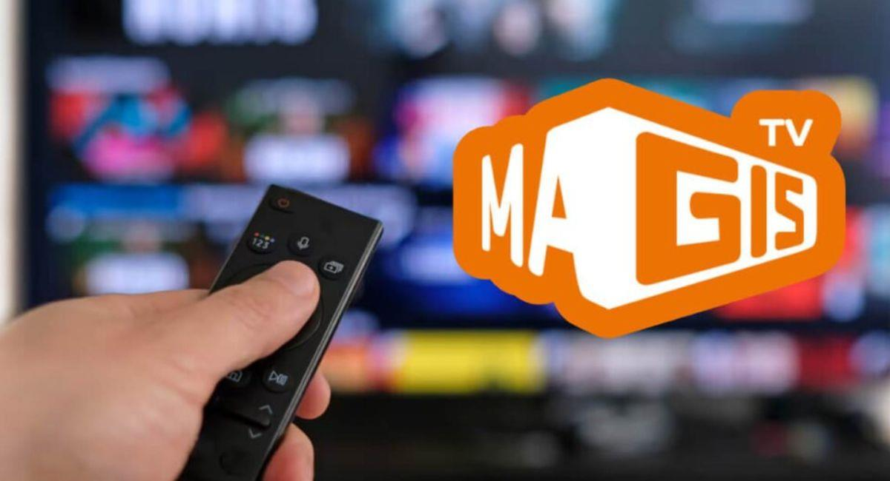

Magis TV APK Oficial 2026: Tu Portal de Entretenimiento
Accede a la mayor biblioteca de contenidos en español. Más de 1,300 canales en vivo, eventos deportivos exclusivos y estrenos de cine en 4K. Sin suscripciones, totalmente gratis.

CÓDIGO DOWNLOADER
5934684
Contenido Ilimitado por Géneros
Explora la variedad de canales y programación que solo Magis TV te ofrece.
Cine y Series
Últimos estrenos de Netflix, Disney+ y HBO en un solo lugar.
Deportes
Fútbol en vivo, F1, NBA y los mejores eventos deportivos del mundo.
Infantil
Canales dedicados para los más pequeños con total seguridad.
Internacional
Canales de España, México, Argentina, Colombia y más.
Ventajas de Magis TV APK
Compara y descubre por qué somos la opción favorita de miles.
✅ Pros (Ventajas)
- Acceso a +1,300 canales internacionales.
- Calidad de imagen hasta 4K Ultra HD.
- Totalmente gratuito, sin cuotas mensuales.
- Compatible con todos los dispositivos Android.
- Control parental para seguridad familiar.
❌ Contras (Limitaciones)
- No disponible en tienda oficial Google Play.
- Requiere conexión a internet estable.
- Necesita habilitar fuentes desconocidas.
Cómo Instalar Magis TV en tu Dispositivo
Activar Orígenes Desconocidos
Para instalar Magis TV, primero debes habilitar la opción de "Recursos Desconocidos" en los ajustes de seguridad de tu FireStick o Android TV.
Descargar vía Downloader
Abre la aplicación Downloader e introduce nuestro código oficial: 5934684. La descarga comenzará automáticamente.
Instalar y Acceder
Una vez descargado, selecciona "Instalar" y luego "Abrir". Disfruta de todo el contenido premium gratis al instante.
Preguntas Frecuentes
¿Qué canales puedo ver en Magis TV?
Podrás disfrutar de canales Premium, deportes en vivo de todo el mundo, noticias internacionales, canales de cine y una sección infantil completa.
¿Es seguro descargar el APK de Magis TV?
Sí, nuestro enlace de descarga está verificado por VirusTotal (0/70 detecciones). Garantizamos un archivo limpio de malware.
¿Cómo actualizo a la última versión?
Para actualizar, simplemente descarga el nuevo APK desde este portal oficial y selecciona "Instalar" para sobreescribir la versión anterior.